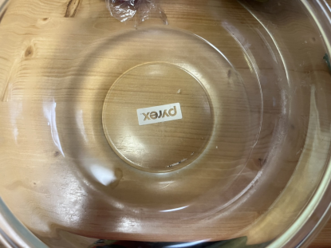

茹でるより美味い!
しっとり柔らかなサラダチキンのレシピ

どうもー！自炊大学生のほうれん草(仮名)です。
今回は切ってレンチンするだけの簡単レシピ
しっとり柔らかなサラダチキン
のレシピを紹介していきますノ
茹でるより柔らかくてリピ確定!
今日の夕飯は楽しちゃいましょう！
材料(1人前)
- 鶏むね肉1枚(約300g)
- 砂糖3g(小さじ1)
- 塩3g(小さじ1/2)
- 水100ml
漬け汁
しっとり柔らかなサラダチキンの作り方
1.鶏むね肉の皮を取ります
2.鶏むね肉の繊維の分け目に合わせて包丁で切ります
ポイント
ざっくりで大丈夫!意識するとより柔らかくなります
3.一口くらいの大きさに切ります
ポイント
包丁が繊維に垂直になるような角度で切るとさらに柔らかくなります。分からなければ気にしなくてヨシ!
3.耐熱容器に砂糖3g、塩3g、水100gをいれて混ぜます

ポイント
レンチンできる容器(タッパーも可)にいれることで
洗い物削減！
4.鶏むね肉を入れて1時間以上漬けます
ポイント
冷蔵庫で一晩寝かせても美味しくなります
5.水100mlを追加します
6.レンジで火が通るまで加熱したら完成
ポイント
私はレンジ600wで８分+かき混ぜてレンジ600wで6分
ぐらい過熱しています。
過熱しすぎでも硬くならないので大丈夫!